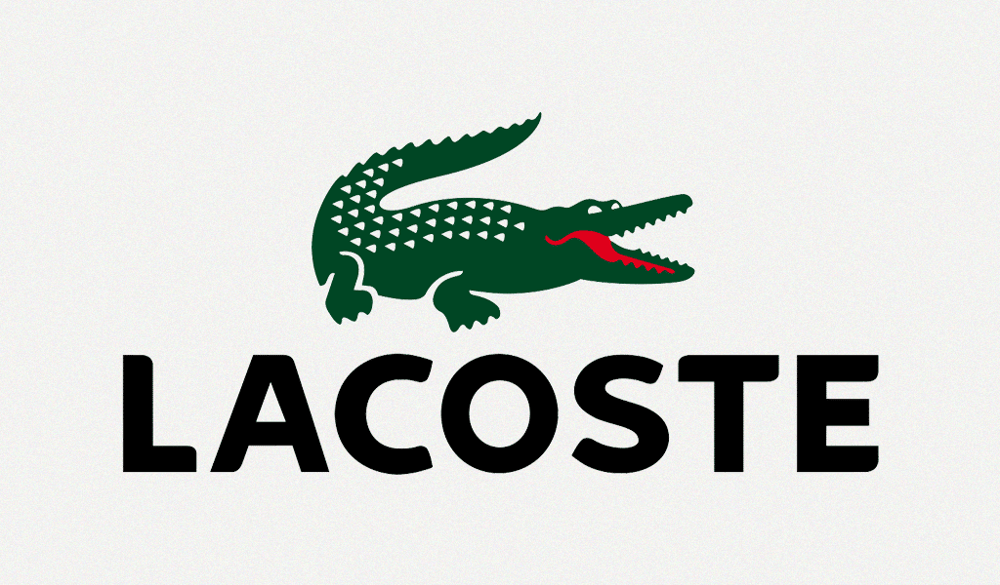

Bem-vindo a Lacoste
Clique na imagem abaixo para ir ao site da Lacoste

O que é a Lacoste?
Lacoste é uma marca francesa de luxo e moda esportiva, conhecida por seu icônico crocodilo bordado e por ser uma das primeiras a exibir um logotipo em suas roupas. Fundada em 1933 pelo tenista René Lacoste, que também é o responsável pelo nome da marca e pelo apelido "Le Crocodile".